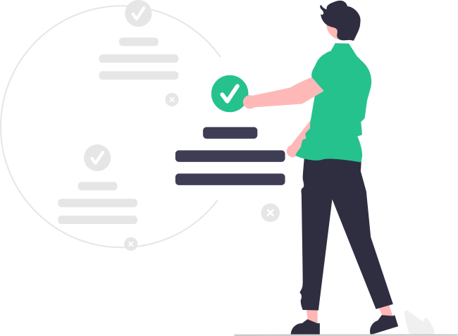

Taskman helps you plan your task quick and with ease

With Taskman you not only plan your Tasks, but you can also track your progress on each task
With Taskman you can mark task as complete upon completion.
Track and manage your tasks and goals at ease with Taskman